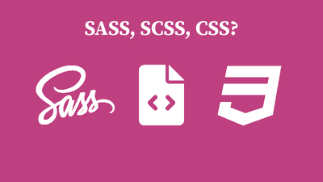
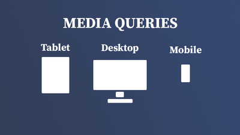

CMS: Systemer for innholdshåndtering og litt mer
CMS er systemer for innholdshåndtering, og disse gir oss et grensesnitt hvor vi kan enkelt behandle innholdet vårt. Man kan enkelt publisere innhold slik som artikler, sider, etc. og ting som design blir tatt hånd om for det meste automatisk.
Les artikkel
WordPress: Installasjon, oppsett og konfigurering
WordPress tillater oss å lage innhold og publisere en nettside uten noe særlig krav til forkunnskaper om koding. Uten å skrive en eneste kodelinje, kan man installerek, sette opp og konfigurere WordPress slik at man kan publisere innhold som ser bra ut. Ingen HTML, CSS eller lignende.
Les artikkel
Microdata: Gjør nettsiden tilgjengelig for roboter

Har du noen gang lurt på hvor de "fancy" søkeresultatene som dukker opp på Google noen ganger kommer fra? Hvis du vil ha muligheten for at sidene dine skal dukke opp slik, må du bruke strukturert data. Microdata er en form for strukturert data som tillater dette.
Les artikkel
SOME: Sosiale medier og deling av innhold
Sosiale medier, kommer man seg unna dem? De har nok kommet for å bli, og derfor er det viktig at man også tilpasser nettsiden sin slik at de kan deles på sosiale medier i et godt format. Her viser jeg hvordan du kan implementere sosiale medier på siden.
Les artikkel
Tilgjengelighet: Nettsider for alle slags brukere
Et av de mest oversette områdene når man utvikler en nettside er å gjøre innholdet tilgjengelig. Tilgjengelighet vil si at alle skal kunne bruke siden din, og at informasjon skal kunne presenteres og navigeres på forskjellige måter, blant annet skjermleser og tastaturnavigasjon.
Les artikkel
SEO: Hvordan tilfredstille Google og robotene
Søkemotoroptimalisering (SEO) er prosessen for å forbedre nettsiden sin synlighet på søkemotorene. En gammel myte, som kanskje var mer sann før, er at du kan skaffe mye trafikk ved å lure søkemotorene. Men, istedenfor, skal man lage den beste mulige siden for brukeren, og heller ikke tenke så mye på de besøkende robotene.
Les artikkel
SASS: CSS med mindre kode og mer funksjonalitet

Det er ikke så morsomt så scrolle ned hundrevis av linjer for å finne den ene knappen du skal endre fargen på.
SASS hjelper oss på mange måter å strukturere stilene til nettsiden vår, som gjør det enklere å opprettholde samt tilbyr mer funksjonalitet enn vanlig CSS.
Les artikkel
Responsivt design: Media queries og fleksibilitet

I en verden som hele tiden endrer seg og med haugevis av nye mobiler, nettbrett og skjermer hvert år er det viktig at siden vår tilpasser seg disse.
Innholdet vårt skal se bra ut, uansett skjermstørrelse.
Les artikkel
HTML5: Video og lyd på nettet, hvordan?

Noen ganger er ikke bilder nok for å få frem et budskap, eller vise hva eller hvordan noe fungerer eller gjøres.
HTML har både innebygde elementer for å vise video og lyd, med mye funksjonalitet som kan brukes for å gjøre innholdet tilgjengelig og brukervennlig.
Les artikkel
HTML-skjemaer: Brukerinndata og interraksjon
HTML-skjemaer lar brukeren samhandle med nettsiden og legge inn informasjon, som senere kan
behandles av webserveren. Ved bruk av skjemaer, kan sluttbrukeren interragere med nettsiden på måter
som ikke hadde vært mulig uten skjemaene.
Les artikkel
Media queries: Dynamisk tilpasning av innhold

Noen ganger har man behov for å tilpasse måten innholdet på nettsiden blir vist til brukeren, basert
på hvilken enhet den vises på. Dette kan vi løse med media queries. Media queries tillater oss å
skrive CSS basert på spesifikke tilstander, f.eks. skjermstørrelsen til brukeren.
Les artikkel
CSS layouts: Grid, flexbox og andre verktøy

Det er mange måter man kan strukturere innholdet på nettsiden sin. Flere verktøy er tilgjengelig for
å gjøre dette, blant annet grid og flexbox, som tillater oss å plassere elementer der vi vil de skal
være uten mye styr.
Les artikkel
Planlegging: Skrifttyper, farger og wireframes
Her beskriver jeg min løsning for oppgave 1 som inneholder planlegging av nettsiden. Jeg viser
hvilke skrifttyper og farger jeg valgte, og mine wireframes.
Les artikkel